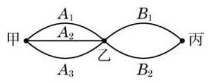
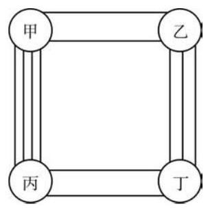
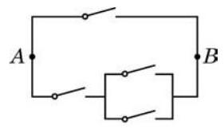

例题 1
例 1 一个三层的书架上共放有 9 本书, 其中第一层放有 4 本不同的语文书, 第二层放有 3 本不同的数学书, 第三层放有 2 本不同的外语书. 若从书架的第一、二、三层各取 1 本书, 共有多少种不同的取法?
学生阅读版 / 沪教版高中数学
选择性必修第二册
第6章计数原理 · 保留教材主线与原题
教材与正式教参整合
自远古以来，数 (shù) 的概念就来源于数 (shǔ) 这个动作. 直到今天, 精确地知道一个有限集合中元素的个数，仍然是一类非常重要的问题. 例如, 在必修课程第 12 章中, 我们已经看到古典概率的计算往往需要用到一些集合的元素个数之间的比值, 但在那里, 因为样本空间较小, 大多数计数都是通过枚举完成的. 在本章里，我们将学习一些基本的计数原理, 以便能够解决更多的计数问题.
先看下面的问题:

图 6-1-1
如图 6-1-1,从甲地到丙地,需经过乙地. 其中,从甲地到乙地有 3 条路线 ,而从乙地到丙地有 2 条路线 、 . 那么,从甲地经由乙地到丙地,共有多少种不同的走法?
从甲地到乙地有 3 种不同的走法, 按其中任何一种走法到达乙地后, 再由乙地到丙地又有 2 种不同的走法. 于是, 不同的走法就有以下 6 种情形 (其中符号 的含义是 "先走路线 , 再走路线 ",其余类同):
其中，每一种情形都可"从甲地经由乙地到丙地". 因此，从甲地经由乙地到丙地共有
种不同的走法.
这里使用的就是下面的
乘法原理(分步计数原理) 做一件事,需要依次完成 个步骤,其中完成第一步有 种不同的方法,完成第二步有 种不同的方法, ,完成第 步有 种不同的方法. 那么完成这件事共有
种不同的方法.
例 1 一个三层的书架上共放有 9 本书, 其中第一层放有 4 本不同的语文书, 第二层放有 3 本不同的数学书, 第三层放有 2 本不同的外语书. 若从书架的第一、二、三层各取 1 本书, 共有多少种不同的取法?
例 2 用 1、2、3、4、5 可以组成多少个没有重复数字的三位数?
例 3 正整数 540 有多少个不同的正约数?
再看下面的问题:
从甲地到乙地, 可以乘飞机, 可以乘轮船, 也可以乘汽车. 一天中，飞机有 4 班，轮船有 3 班，汽车有 2 班. 问:一天中乘坐这些交通工具从甲地到乙地共有多少种不同的走法?
因为一天中乘飞机有 4 种走法, 乘轮船有 3 种走法, 乘汽车有 2 种走法, 其中每一种方法都可以实现从甲地到乙地的目的, 所以一天中乘坐这些交通工具从甲地到乙地共有
种不同的走法.
这里使用的就是下面的
每一类办法中的每一种方法都可以单独完成这件事情, 这是"加法原理"与"乘法原理"的区别.
加法原理(分类计数原理)做一件事，完成它有 类办法,其中第一类办法有 种不同的方法,第二类办法有 种不同的方法, ,第 类办法有 种不同的方法. 那么完成这件事共有
种不同的方法.
例 4 用 1、2、3、4、5 这五个数字可以组成多少个十位数字大于个位数字的两位数?
例 5 如图 6-1-2, 从甲地到乙地有 2 条路, 从乙地到丁地有 3 条路; 从甲地到丙地有 4 条路, 从丙地到丁地有 2 条路. 那么, 从甲地到丁地, 如果每条路至多走一次, 且每个地点至多经过一次, 有多少种不同的走法?

图 6-1-2
例 6 在 300 和 800 之间，有多少个没有重复数字的奇数?

(第 2 题)